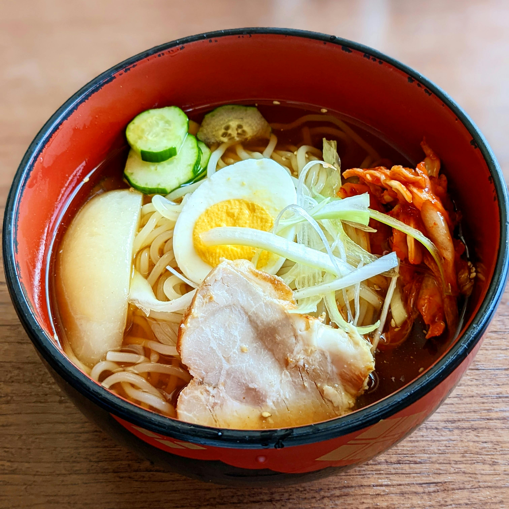

Home
Odin's Ramen

Description
A flavourful miso broth ramen enriched with probiotic ingredients like organic kimchi, freshly boiled eggs, and a pop of green cabbage.
Ingredients
- 300g ramen noodles
- 1 large hardboiled egg
- 1/4 cup shredded cabbage
- 1/4 cup kimchi
- 1 tbsp miso paste
- 1.5 cup chicken stock
- 2 poached chicken breasts
- 2 tbsp soy sauce
- Cucumber rounds for garnish
Steps
- Soak ramen noodles in water as directed by the package.
- Fry cabbage in oil for 3 minutes in a medium saucepan and add stock.
- Bring to a boil and simmer, adding miso paste.
- Add chicken breasts, soy sauce, and egg.
- Stir occassionally for 10 minutes and take off the heat.
- Add kimchi and cucumber rounds, if desired.